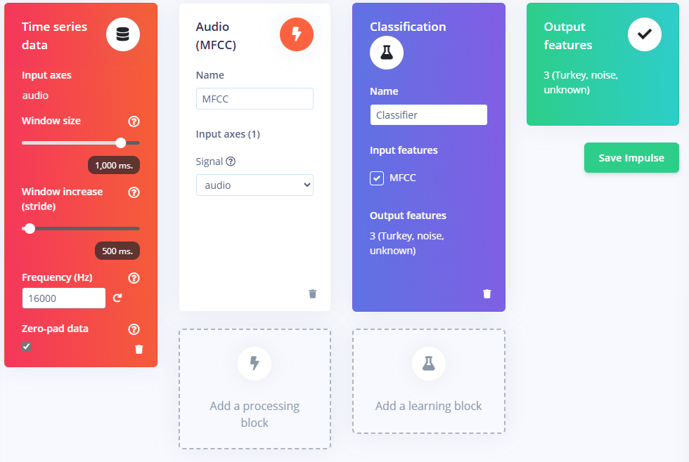

15. Lab 3: Edge Impulse KWS#
In this lab we will make a “Hey, Siri” type device that continuously listens for a keyword. When your device spots your keyword it will turn on an LED!
15.1. Prelab#
Reading#
For Iodice’s TinyML Cookbook, 2nd Ed, Chapter 4: “Using Edge Impulse and the Arduino Nano to Control LEDs with Voice Commands”:
Here is the chapter Summary… first.
The recipes presented in this chapter demonstrated how to build an end-to-end KWS application with Edge Impulse and the Arduino Nano.
Initially, we learned how to prepare the dataset by recording audio samples with a smartphone and the Arduino Nano directly from Edge Impulse.
Afterward, we delved into model design. Here, we introduced the MFE (or Mel-spectrogram) as a suitable input feature for training a CNN model for KWS.
Then, we trained a generic CNN and used the Edge Impulse EON Tuner to discover more efficient model architectures for our target platform regarding accuracy, latency performance, and memory consumption.
Finally, we tested the model’s accuracy on the test dataset and live audio samples recorded with a smartphone and deployed the KWS application on the Arduino Nano.
In this chapter, we have started discussing how to build a tinyML application with a microphone using Edge Impulse and the Arduino Nano. With the next project, we will continue this discussion on the Raspberry Pi Pico to recognize music genres with the help of TensorFlow and the CMSIS-DSP library.
You need to read the following excerpts:
Read the intro, up through the “Technical Requirements”
Skim “Acquiring audio data with a smartphone” and “Acquiring audio data with the Arduino Nano”
Read Extracting MFE features from audio samples up to but not including “How to do it…”
Read Designing and training a CNN up to but not including “Step 3.”
Read Keyword spotting on the Arduino Nano through “Step 1”, then skim the rest.
Yes, you have to read them.
Data Collection#
Collecting a dataset is typically the most difficult, time-consuming, and expensive part of any edge AI project. It’s also the most likely place you will make terrible, hard-to-detect mistakes that can doom your project to failure. ~ AI at the Edge
You need to think of a great keyword! It should be at least two syllabus, three ideally. Examples (that you can’t use) include ‘Hey Siri’, ‘OK, Google’, ‘Alexa’, ‘Hello World’.
Once you think of your awesome keyword:
Create an Edge Impulse account; I used my afacademy email.
Login, then Create a new project (top right of projects page). You can name it
kws_labor whatever you want.Click Data acquisition in the left sidebar.
In the Collect data* box, click the chip symbol in the top right; hovering says “connect a development board”
Scan the QR code to connect your phone.
Change the label to “keyword” or something helpful
Record 10 seconds of you saying your keyword in spaced intervals.
Hint
The Reading ^^ that you definitely did goes into detail for collecting audio samples for KWS.
Go back to your dashboard and make sure the samples look good. Once they do…
Copy the QR Code or grab URL from the QR code. Mine started with https://smartphone.edgeimpulse.com/index.html?apiKey= and had a 67-character API key.
Then…
Share with your friends and family!
Be sure to give them very specific instructions* on how to record themselves saying your keyword. Your goal is to get lots of different people saying your keyword so that you have a robust dataset.
Ideally, you have several minutes of audio prior to the lab starting… best of luck!
Equipment Setup#
The instructor or lab technician should help you flash the Edge Impulse firmware to your Arduino. Otherwise, see Appendix: Flash Edge Impulse Firmware to Arduino
16. Lab Workday#
16.1. Data Processing#
At this point hopefully your friends and family have uploaded lots of samples of your keyword to your Edge Impulse project!
These samples were recorded on a phone microphone. However, we are going to be using our Arduino for real-world inference. As such, we will record some samples with the Nano’s builtin microphone.
Once we do that, we’ll need to process all this data so that it’s ready to use!
Collect Samples with Nano#
Building the dataset with recordings obtained with the mobile phone’s microphone is undoubtedly good enough for many applications. However, to prevent any potential loss in accuracy during the model’s deployment, we should also include audio clips recorded with the microphone used by the end application in the dataset. ~ TinyML Cookbook
To get started, you can connect your Arduino - with the Edge Impulse firmware already flashed - to your EdgeImpulse.com online project.
You can do this on your laptop, Pi, whatever; you must use Edge or Chrome.
Connect your Arduino to laptop with USB
Open your online project
Click on Data acquisition in the left sidebar
In the Collect data box, click the USB symbol in the top right.
Your browser will open a popup, select Nano 33.

Record about 50 samples of yourself saying the keyword, using your Nano microphone.
Split Samples#
And now, for the fun, grueling, reality of machine learning: data processing!
Follow the guidance in TinyML combined with Edge Impulse Tutorial: Responding to your voice to:
Crop samples where your grandma said something that doesn’t match the label
Split samples into 1 second samples

Download a dataset#
Download the keyword spotting dataset and unzip it to your computer.
Delete any file that starts with “helloworld” since that’s not a label we want.
We want roughly the same number of samples in each of our classes: noise, unknown, keyword.
There are about 300 files in the the testing/ directory, so just over two minutes of audio each for “noise” and “unknown.”
That’s hopefully about how many “keyword” samples you have!
The training/ directory has many more samples… you probably don’t need that many, so don’t upload it.
If you don’t have about two minutes of keyword samples, you need to either go get more data or upload less data to keep your classes balanced…
Upload unknown and noise samples to your project (instructions here if needed).
Test/Train Split#
Rebalance your dataset by Perform test/train split.
16.2. Create Impulse#
This section mostly* follows section 4, 5, & 6 of the tutorial, but not exactly.
Under Impulse design, on the left sidebar, click on the Create impulse.
Then click Add a processing block and then Audio (MFCC).
Extracts features from audio signals using Mel Frequency Cepstral Coefficients, great for human voice.
Next, Add a learning block and select Classification.
Learns patterns from data, and can apply these to new data. Great for categorizing movement or recognizing audio.
When you are done it should look like this. Click Save Impulse.

MFCC Block#
Follow the tutorial to configure your MFCC block and generate features.
Classification Block#
Follow the tutorial to Configure your neural network but…
Also select data augmentation to warp time
Follow the steps in TinyML to use 2D Convolution and get better accuracy than 1D Convolution. You only have to delete two lines of code and edit one other.
Note
I benchmarked 1D and 2D as well as the available MobilenetV2 transfer learning
Here are my results for int8 quantized models on the EON compiler:
Model |
Test set accuracy (%) |
Memory Usage (KB) |
Latency (ms) |
|---|---|---|---|
1D-Conv |
94.12 |
15.4 |
276 |
2D-Conv |
83.53 |
15.4 |
261 |
MobilenetV2 |
98.82 |
216.3 |
1020 |
Notice that although MobilenetV2 is extremely accurate, it has 4x the latency and barely fits in our available RAM!
After training is completed, make sure you select Quantized (int8) for Model version. Then explore your confusion matrix. Which type of error do you care about the most, and how did your model perform specifically in that regard?
Test Results#
After you’ve trained your model, select Model testing in the left side bar.
Then click the green Classify all button to run the model against your test dataset.
See Classifying new data for some tips about exploring misclassifications.
16.3. Deployment#
After running your test set on your model, click Deployment on the left side bar.
Use your phone to scan the Run this Model QR Code and give it a test drive.
Once you are happy with that, time to put it on the Arduino!
Library Setup#
Go to Deployment and search deployment options for Arduino Library.
Then find the EON Compiler Quantized (int8).
Make sure you screenshot or record those stats!
Then select, Build and Download.
Arduino Import Library#
Note
You do need to open Explorer.exe and right click on Documents/Arduino/ and select always keep on device.
The Arduino Docs recommend changing your sketch and library location to something outside of OneDrive, but if you at least keep them on device it should be ok.
Open Arduino IDE on your Desktop.
Go to Sketch > Include Library > Add .ZIP Library
Choose the .zip you downloaded from Edge Impulse.
Next we will open nano_ble33_sense_microphone_continuous example from
File > Examples > Examples from Custom Libraries > your project name_inferencing > nan_ble33_sense > nano_ble33_sense_microphone_continuous
Now, save that as a new file, such as kws_lab or something. This is because you aren’t allowed to modify examples.
Before you do anything else you should initialize a git repository in the folder where your .ino is
and commit it with something like “Original nano_ble33_sense_microphone_continuous example”.
That way if you break it in the next step you can revert!
Plug in your Nano 33 and click the Verify check mark. Then go take a long walk. Fortunately, the IDE caches the compilation of the included libraries, so subsequent compilations are much faster.
Modify the Example#
We want to modify the example to flash the built in LED whenever your keyword is heard!
First, read the example and sort of try and understand what it’s doing. Then download the program to your Nano and open up the Serial monitor and try it out!
Once you have the loose hang of what it’s doing, let’s get going.
Open the Nano 33 BLE Rev2 Pinout data sheet. Find the DEFINE term for the yellow LED that’s built into the board.
Next, use the DEFINED name to set the appropriate
pinMode()
in your setup() function.
Follow Step 6 in TinyML to disable the MA filter.
Then modify Step 8/9 to digitalWrite()
HIGH to your LED if your class was heard; otherwise, write LOW.
Note
If you use delay() it will pause the thread… meanwhile, the audio buffer is still filling up!
This will produce a buffer overrun error. Perhaps ok for debugging now, but ultimately we don’t want to miss samples because we aren’t letting our thread do work.
16.4. Deliverables#
Demo your working keyword-triggered LED to your instructor! (And your fans at home that helped you collect data 😁)
Push your code to GitHub (You will need it for the final project!)
Complete the Gradescope assignment.